Documenting form and perspective: a visual record of 3D reconstruction during neural downtime.
STUDY_01: ANATOMY
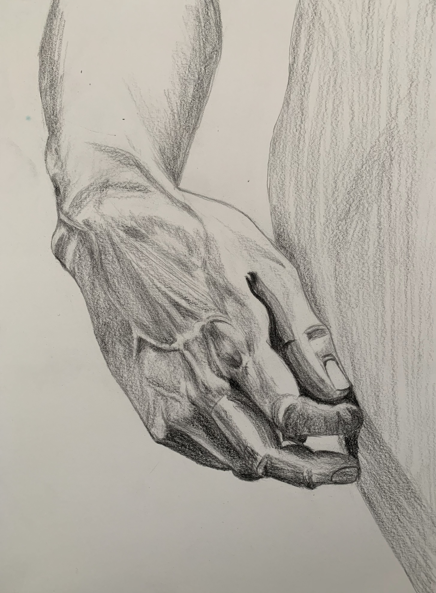
↳ Subject: Human Hand
STUDY_02: FORM
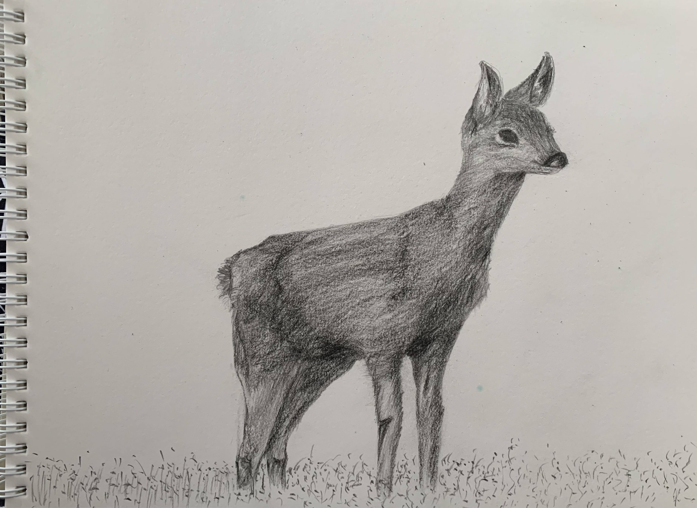
↳ Subject: Organic Form
STUDY_03: ARCHITECTURE
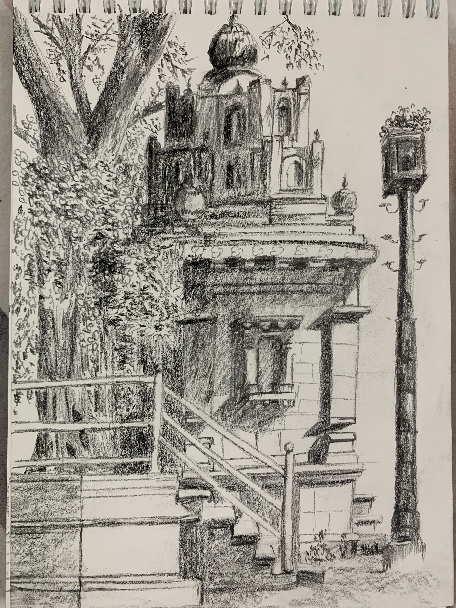
↳ Subject: Temple Perspective
STUDY_04: BOTANICAL

↳ Subject: Tree Structure
STUDY_05: CHROMATIC
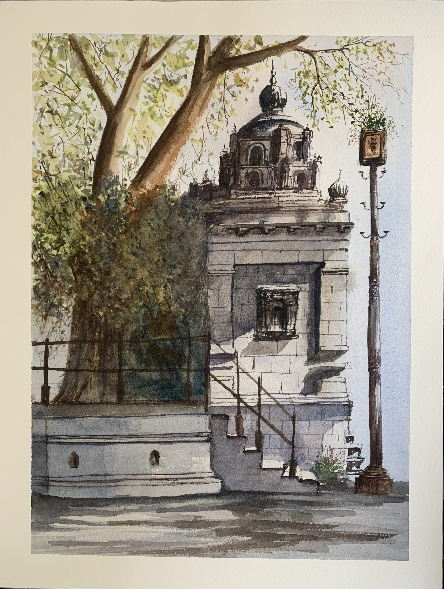
↳ Subject: Color/Light Study
STUDY_06: FRAME
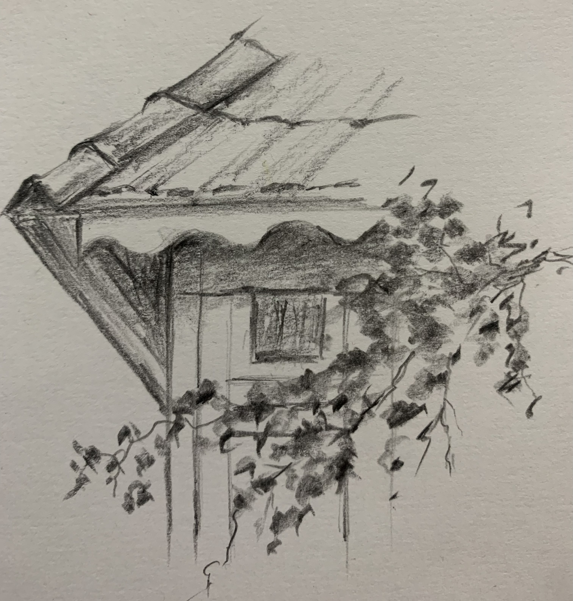
↳ Subject: Window Perspective
STUDY_07: STRUCTURE
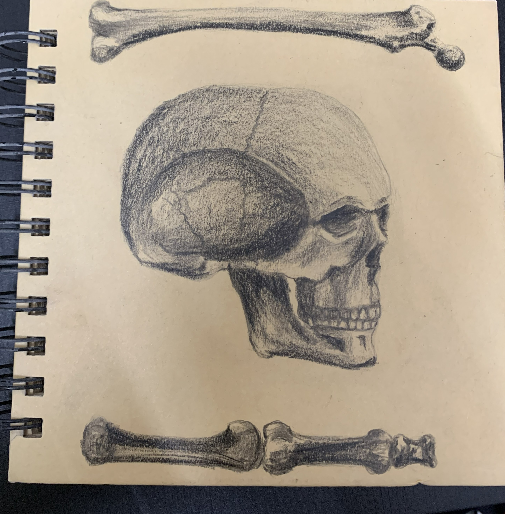
↳ Subject: Skeletal Form
STUDY_08: FAUNA
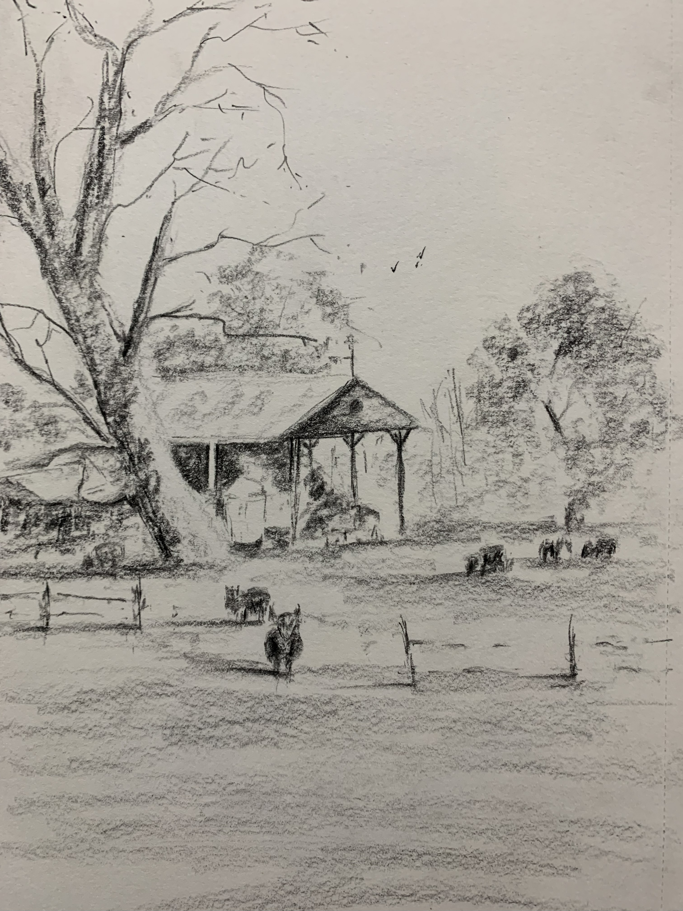
↳ Subject: Animal Study
STUDY_09: ABSTRACT
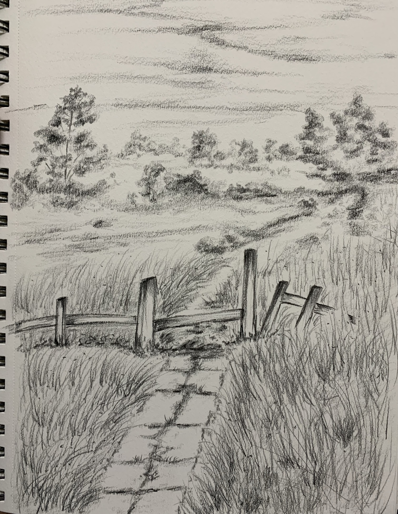
↳ Subject: Decision Study
STUDY_10: LANDSCAPE
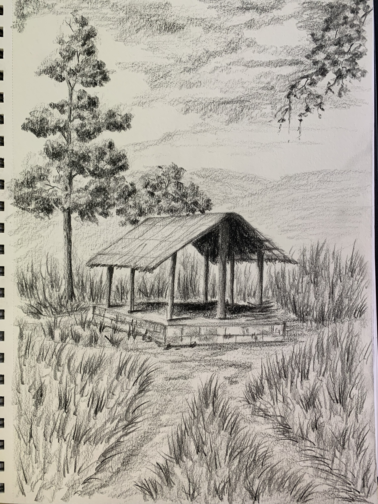
↳ Subject: Rural Environment
STUDY_11: UTILITY
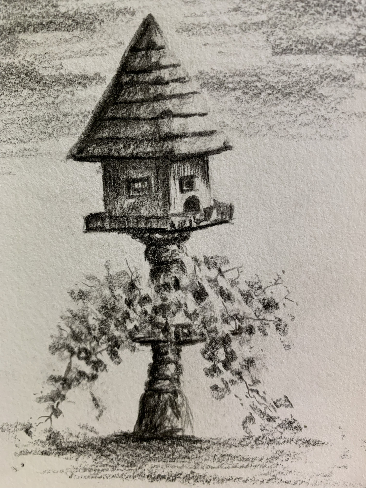
↳ Subject: Post Study
STUDY_12: PATHWAY
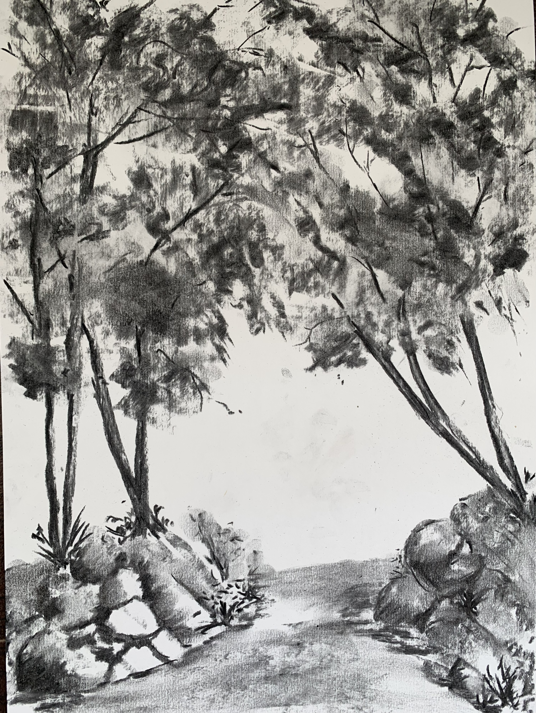
↳ Subject: Route Mapping
STUDY_13: MARITIME
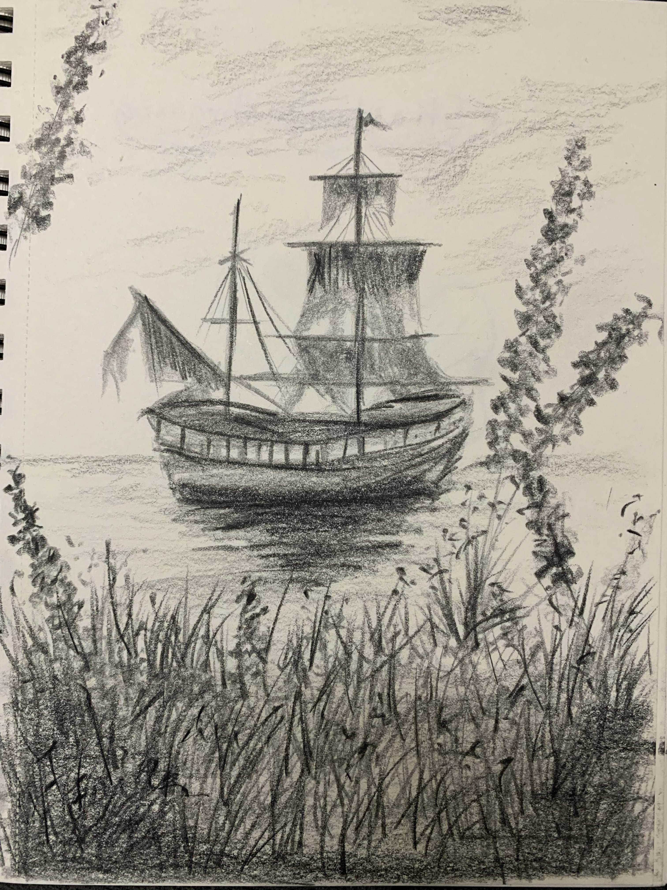
↳ Subject: Boat Form
STUDY_14: STRUCTURE
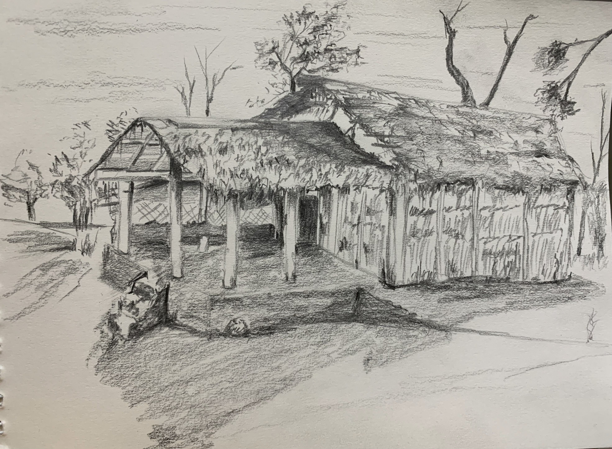
↳ Subject: Shed Study
STUDY_15: SOLITUDE

↳ Subject: Compositional Study
STUDY_16: AUTUMN
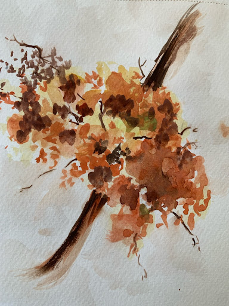
↳ Subject: Compositional Study